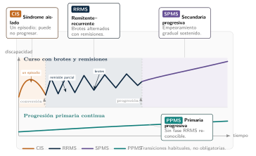
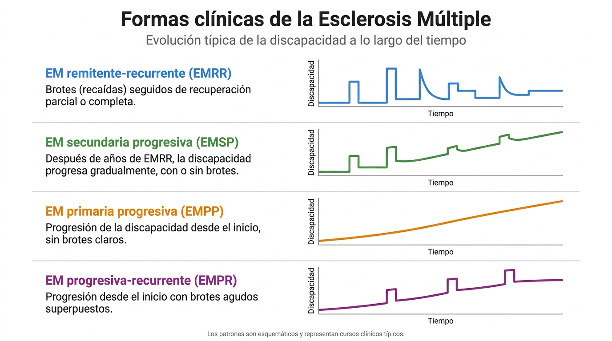

1 Esclerosis múltiple para ingenieros
| Sección | Lectura | Estudio |
|---|---|---|
| ¿Qué es la EM? | 5 min | 25 min |
| Escalas de evaluación clínica | 6 min | 10 min |
| EM y conectividad funcional | 5 min | 5 min |
| Por qué EEG en reposo para estudiar EM | 2 min | 5 min |
| Síntesis y preguntas para discutir | 3 min | 15 min |
| Dudas del proyecto | 5 min | 5 min |
| Capítulo completo | 24 min | 55 min |
Objetivos de aprendizaje
Objetivo del capítulo. Qué es la esclerosis múltiple, cómo se gradúa en la clínica (EDSS) y por qué el EEG de reposo es una vía razonable para buscar alteraciones de la conectividad funcional.
La pregunta científica. Si la esclerosis múltiple daña la mielina, ¿qué debería cambiar en lo que mide un EEG y por qué cabría esperar verlo en la conectividad funcional?
Al terminar este capítulo deberías ser capaz de:
- explicar qué es la esclerosis múltiple (EM) en términos de inflamación, desmielinización y daño axonal;
- distinguir el efecto de conducción del efecto de red, y relacionar el segundo con un cambio de fase entre regiones;
- nombrar las formas clínicas principales y en qué se diferencian;
- saber qué miden la EDSS y el D-FIS y de qué tipo de variable se trata;
- justificar por qué se usa EEG en reposo, con sus ventajas y sus límites.
Conocimientos previos. Ninguno de neurología. Conviene tener clara la idea de frecuencia y de fase de una oscilación; la simulación de este capítulo la usa. Es el capítulo de fundamentos del informe, pensado para quien llega desde la ingeniería: la literatura publicada y las hipótesis del proyecto están en el capítulo 2 («Estado del arte, hipótesis y objetivos»).
Lecturas esenciales
Tres lecturas, de mayor a menor prioridad. Los tiempos y la dificultad para ingeniería (1 = baja, 3 = alta) son los que da el informe original y son orientativos.
Pasa el cursor (o toca) sobre la cita para ver la referencia completa. Los tres niveles son los del informe: imprescindible, para profundizar y consulta.
Imprescindible
Mestre (2021) · La esclerosis múltiple (libro, Editorial CSIC).
Visión clínica de la enfermedad en castellano: formas evolutivas, diagnóstico y tratamiento. Base para entender a quién se registra.
- Tiempo ≈ 3 h
- Dificultad 1/3
- Sección Sección 1.1
- DOI sin DOI (libro; ISBN 9788400107697)
Para profundizar
Schoonheim et al. (2015) · «Network collapse and cognitive impairment in multiple sclerosis» (artículo, Frontiers in Neurology).
Marco del «colapso de red»: cómo el daño estructural reorganiza la conectividad funcional y se relaciona con el deterioro cognitivo. Es la hipótesis de fondo del proyecto.
- Tiempo ≈ 1,5 h
- Dificultad 2/3
- Sección Sección 1.3
- DOI 10.3389/fneur.2015.00082
Consulta
Rocca et al. (2012) · «Large-scale neuronal network dysfunction in relapsing-remitting multiple sclerosis» (artículo, Neurology).
Evidencia de disfunción de redes a gran escala en EM remitente-recurrente; contrapunto de neuroimagen al EEG.
- Tiempo ≈ 1 h
- Dificultad 2/3
- Sección Sección 1.3
- DOI 10.1212/WNL.0b013e31826d5f10
1.1 ¿Qué es la EM?
La esclerosis múltiple (EM) es la enfermedad neurológica autoinmune, desmielinizante y degenerativa más frecuente en adultos jóvenes. En términos directos, el sistema inmune ataca la vaina de mielina que recubre los axones del sistema nervioso central, provocando inflamación, desmielinización y, con el tiempo, daño axonal. Cuando esa mielina se deteriora, la conducción de señales nerviosas se enlentece o se interrumpe. El resultado clínico depende de dónde ocurren las lesiones: pueden manifestarse como problemas visuales, motores, sensitivos, cognitivos o de fatiga, en combinaciones muy diversas (Mestre 2021).
Autoinmune. El sistema inmune reconoce por error componentes propios como extraños y los ataca. En EM, linfocitos autorreactivos cruzan la barrera hematoencefálica e inflaman el Sistema Nervioso Central (SNC).
Desmielinizante. La mielina es la vaina lipídica que aísla los axones y acelera la conducción eléctrica. Un proceso desmielinizante destruye esa vaina: la señal puede seguir propagándose, pero mucho más lenta o de forma saltatoria defectuosa.
Degenerativa. Además del daño inflamatorio agudo, la EM provoca pérdida progresiva e irreversible de axones. Ese componente neurodegenerativo explica el deterioro acumulativo incluso cuando no aparecen nuevas lesiones en la resonancia magnética (RM, en inglés MRI).
![Dibujo de un cerebro visto de lado, con cada región en un color y su función escrita al lado: lóbulo frontal en azul (funciones ejecutivas, planificación, atención, personalidad y control motor voluntario), parietal en rosa (procesamiento sensorial, integración espacial y orientación), occipital en naranja (procesamiento visual: forma, color y movimiento), temporal en verde (audición, memoria, comprensión del lenguaje y emociones), cerebelo en morado (coordinación motora, equilibrio y aprendizaje motor) y tronco encefálico en beige (funciones vitales automáticas: respiración, frecuencia cardiaca, sueño y estado de alerta).](../assets/figures/cap01/Cerebro_macro.png)
1.1.1 Fisiopatología básica
El proceso inmunomediado en EM involucra principalmente linfocitos T autorreactivos que cruzan la barrera hematoencefálica e inician una respuesta inflamatoria localizada en el SNC. La inflamación ataca la mielina —producida por los oligodendrocitos— y puede dañar también los propios axones. Los efectos funcionales son dos:
- Efecto de conducción: la desmielinización ralentiza o bloquea la propagación de potenciales de acción. La velocidad de conducción puede reducirse de 50–60 m/s a 5–10 m/s o incluso interrumpirse por completo.
- Efecto de red: los retrasos de conducción alteran las relaciones temporales entre regiones corticales. Si dos regiones normalmente sincronizan a una frecuencia dada, un cambio en el retardo de conducción del tracto que las conecta puede desincronizarlas o cambiar su patrón de acoplamiento de fase.
Velocidades sin cita propia. Las de 50–60 m/s y 5–10 m/s no tienen cita propia en el informe original (la referencia general de la sección es Mestre (2021)). Se mantienen tal cual y se usan en la simulación de más abajo como valores ilustrativos. provisional
Mostrar la explicación
Un retardo no cambia la frecuencia de una oscilación estable: la oscilación llega más tarde, con la misma frecuencia. Lo que cambia es la fase relativa: si el retardo es \tau y la frecuencia f, el desfase es \Delta\varphi = 360^\circ\cdot f\cdot\tau. Por eso el «efecto de red» se describe en términos de fase y por eso el wPLI, que mide sincronía de fase, es una herramienta razonable para buscarlo. La simulación siguiente permite explorarlo.
Piense en el axón como un cable por el que viaja el potencial de acción. La mielina lo aísla y hace que la señal avance a saltos entre interrupciones de la vaina, lo que la acelera. Si la vaina se daña, la propagación sigue siendo posible pero más lenta o irregular (véase la nota de margen sobre «desmielinizante»). Desde la señal, lo relevante es que el retardo cambia, no la frecuencia.
1.1.2 Simulación · Del retardo de conducción al desfase
Esta simulación convierte un retardo de conducción en el desfase que se observaría entre dos regiones que oscilan a la misma frecuencia. Puedes cambiar la frecuencia, la longitud del trayecto y la velocidad, y ver cómo cambia el desfase, incluido el caso en que el retardo supera medio periodo.
Pregunta guía: con los valores del informe (de 55 a 7,5 m/s), ¿cuánto cambia el desfase entre dos regiones que oscilan a 10 Hz? ¿Y qué pasa si el retardo llega a ser mayor que medio periodo?
Límites: f entre 1 y 40 Hz; L entre 10 y 300 mm; v entre 0,5 y 80 m/s. Los deslizadores no admiten valores fuera de rango.
Supuestos y diferencias con la realidad
- Solo geometría. Una sinusoide retrasada τ. No hay neuronas, tractos reales, varios caminos ni suma de actividad: no modela la conducción nerviosa.
- Valores ilustrativos. La longitud del trayecto la fija quien usa la simulación. Las velocidades de 55 y 7,5 m/s son los puntos medios de los intervalos del informe (50–60 y 5–10 m/s), que no tienen cita en el original.
- No es wPLI. El wPLI se calcula a partir de la parte imaginaria del espectro cruzado de muchas épocas y no equivale al desfase de una sola sinusoide. Esta simulación solo muestra que un retardo se traduce en un desfase y que el desfase medido es ambiguo cuando el retardo supera medio periodo.
- Fórmulas. τ = L/v y Δφ = 360°·f·τ, con el desfase observable envuelto en (−180°, 180°]. La velocidad a la que el desfase llega a 180° es v* = 2·f·L. Se comprueban en
tests/verificar.mjs. - Esta simulación no modifica nada: no lee ni escribe
config/pipeline.tomlni ejecuta análisis EEG.
interactive/esclerosis-multiple/retardo.js). Las velocidades de 2 m/s o menos solo sirven para mostrar el efecto del «envolvimiento» de la fase; no son valores del informe.
| Velocidad v (m/s) | Retardo \tau (ms) | Desfase \Delta\varphi | Desfase observable |
|---|---|---|---|
| 55 | 1,82 | 6,5° | 6,5° |
| 7,5 | 13,33 | 48,0° | 48,0° |
| 5 | 20,00 | 72,0° | 72,0° |
| 2 | 50,00 | 180,0° | 180,0° |
| 1,5 | 66,67 | 240,0° | −120,0° |
| 1 | 100,00 | 360,0° | 0,0° |
- Con f=10 Hz y L=100 mm, ¿cuánto desfase hay a 55 m/s y a 7,5 m/s? ¿Por qué factor se multiplica?
- Sube la frecuencia a 40 Hz con v=7{,}5 m/s: ¿qué ocurre con el desfase? ¿Qué pasa con el mismo retardo a frecuencias más altas?
- Baja la velocidad hasta que el signo del desfase observable cambie. ¿A qué velocidad ocurre con f=10 Hz y L=100 mm, y qué significa?
Qué deberías observar
- 6,5° y 48,0°: el desfase se multiplica por 55/7,5 ≈ 7,3, igual que el retardo, porque con f fijo el desfase es proporcional a \tau.
- A 40 Hz el mismo retardo de 13,33 ms equivale a 192°: el desfase es proporcional a la frecuencia, de modo que un mismo retardo es una perturbación mayor de la fase en las bandas rápidas que en las lentas. Con 192° se supera medio periodo y el desfase observable es −168°.
- Cuando v<v^*=2fL=2 m/s el retardo supera medio periodo y el desfase observable cambia de signo: B, que sigue llegando después, parece ir adelantada. Esas velocidades son extremas y solo sirven para ver el efecto; lo que importa es que, a una frecuencia dada, un desfase medido solo se interpreta como retardo sin ambigüedad mientras éste sea menor que medio periodo. observado en la simulación; interpretación la lectura sobre las bandas.
Muestra que un retardo se traduce en un desfase y cómo se puede perder la información de signo. No demuestra que la EM produzca cambios de wPLI medibles ni que los retardos reales sean los de la tabla. Esa es una hipótesis del proyecto que se discute en el cap. 2 del informe original. hipótesis
1.2 Escalas de evaluación clínica
La EM no es un solo curso clínico, la variabilidad interindividual es enorme y tiene implicaciones en cómo interpretar los datos en la práctica (Mestre 2021). Por lo tanto, al tratarse de una enfermedad clínicamente tan heterogénea se pueden definir diferentes formas clínicas de EM.
Siglas. RRMS (relapsing-remitting multiple sclerosis): equivalente inglés de EMRR (esclerosis múltiple remitente-recurrente). SPMS (secondary progressive multiple sclerosis): EMSP (secundariamente progresiva). PPMS (primary progressive multiple sclerosis): EMPP (primariamente progresiva). CIS (clinically isolated syndrome): síndrome clínicamente aislado.
| Tipo | Abrev. | Características |
|---|---|---|
| Remitente-recurrente | EMRR | El más frecuente (85 % al diagnóstico). Brotes de déficit neurológico seguidos de recuperación parcial o total. Entre brotes: fase estable. |
| Secundariamente progresiva | SPMS | Evolución de RRMS hacia deterioro gradual continuo, con o sin brotes superpuestos. |
| Primariamente progresiva | PPMS | Deterioro continuo desde el inicio, sin brotes. Menos frecuente (∼15 %), peor pronóstico motor. |
| Síndrome clínicamente aislado | CIS | Primer episodio sugestivo de EM, antes de un segundo brote que confirme el diagnóstico. |
Un brote es un episodio de déficit neurológico que aparece, dura un tiempo y se recupera de forma parcial o total. La forma más frecuente al diagnóstico (85 %) es la remitente-recurrente: brotes separados por fases estables. En las formas progresivas, en cambio, el deterioro es continuo: desde el inicio (primaria, ∼15 %) o tras años de brotes (secundaria). Para el análisis, la forma clínica es una variable de grupo más, como la edad.

La figura 1.2 muestra las transiciones habituales entre tipos. La forma que toma la discapacidad dentro de cada tipo a lo largo del tiempo es otra dimensión, complementaria, del mismo fenómeno. La cuarta forma que incluye —EM progresiva-recurrente (EMPR), progresión continua desde el inicio con brotes agudos superpuestos— es una categoría de clasificaciones históricas que las revisiones fenotípicas más recientes tienden a absorber dentro de PPMS con actividad, por lo que no aparece como entrada separada en la tabla 1.2.

| Escala | Qué mide | Relevancia para NeuroMIND |
|---|---|---|
| EDSS | Grado de discapacidad física global (0–10). | La escala más usada en ensayos clínicos. Si disponible, candidata a correlacionar con métricas de red. |
| MSFC | Marcha, destreza manual y cognición (compuesto). | Más sensible que EDSS para cambios cognitivos. |
| SDMT | Velocidad de procesamiento. | Correlaciona con fatiga cognitiva, relevante para cambios de conectividad theta/alpha (Schoonheim et al. 2015). |
La discapacidad se gradúa con la EDSS y la fatiga con el D-FIS.
La EDSS (Expanded Disability Status Scale) gradúa la discapacidad física global de un paciente de 0 a 10: cuanto más alta, mayor discapacidad. Es la escala más usada en ensayos clínicos de EM. No es una medida continua fina, sino una escala ordinal por pasos; en NeuroMIND es la variable clínica candidata a cruzar con la conectividad cuando se integre la base clínica.
El D-FIS (Daily Fatigue Impact Scale) mide cuánto interfiere la fatiga en las actividades del día: cuanto más alta la puntuación, mayor el impacto. Es la variable clínica principal de fatiga en MINDEM. En la base recibida es un valor continuo, con rango observado 0–30. Los estudios de EEG de reposo en EM usan otras escalas (mFIS, FSS); aquí el D-FIS es el de la hipótesis de fatiga (§«Estado del arte, hipótesis y objetivos» del cap. 2 del informe original).
Pregunta de comprensión ¿Por qué la misma enfermedad puede producir síntomas tan distintos de un paciente a otro?
Porque la EM daña la mielina donde ocurran las lesiones, y cada región del sistema nervioso central se encarga de funciones distintas (figura 1.1): una lesión en la vía visual afecta a la visión, otra en el cerebelo a la coordinación, otra en regiones frontales a las funciones ejecutivas. Dos pacientes con el mismo diagnóstico pueden tener lesiones en lugares diferentes y, por tanto, síntomas diferentes; además, la forma clínica (tabla 1.2) y la evolución en el tiempo (figura 1.3) varían. Es lo que el informe resume como «enorme variabilidad clínica». Para el análisis, esa heterogeneidad es la razón por la que la forma clínica y la edad se tratan como variables de grupo. interpretación
Pregunta de comprensión ¿Por qué se dice que la EDSS «no es una medida continua fina», y por qué importa para el análisis?
La EDSS asigna una puntuación por pasos a partir de la exploración clínica; es una escala ordinal: un valor mayor indica más discapacidad, pero la diferencia entre dos pasos consecutivos no tiene por qué representar la misma cantidad de discapacidad en todo el rango. Tratarla como una variable continua de intervalo (por ejemplo, calcular medias y correlaciones lineales sin más) supone una igualdad entre pasos que la escala no garantiza. Es una decisión estadística abierta del proyecto (véase la duda COH-01 y la pregunta abierta 2). La frase del informe es literal: «no es una medida continua fina, sino una escala ordinal por pasos». interpretación
Las escalas y las formas clínicas se apoyan en cuatro trabajos que conviene conocer. Se ordenan por fecha; de cada uno solo se indica el tema que declara su título, porque no se han leído los artículos completos para este libro y no se les atribuye ningún dato.
- 1983 · EDSS. Se presenta «una escala ampliada de discapacidad» (expanded disability status scale), la EDSS (Kurtzke 1983).
- 2002 · D-FIS. Se describe y valida una escala de impacto de la fatiga para administración diaria, el D-FIS (Fisk y Doble 2002).
- 2014 · formas clínicas. Se define el curso clínico de la EM en las revisiones de 2013 (Lublin et al. 2014). Trata la clasificación fenotípica a la que alude el párrafo que precede a la figura 1.3; el informe original no la cita y aquí no se ha comprobado el detalle sobre la EMPR.
- 2018 · diagnóstico. Se revisan los criterios de McDonald (revisión de 2017; pueden existir revisiones posteriores que no se han comprobado) (Thompson et al. 2018).
Qué se ha comprobado de estas referencias
Su registro bibliográfico se verificó por DOI en Crossref el 22 de octubre de 2026. En la comprobación automática del 27 de octubre, Kurtzke (1983) y Lublin et al. (2014) figuran con una diferencia de título respecto a Crossref (similitud de palabras 0,50 y 0,75), pendiente de revisión humana; el resto coincide en título, año y primer autor (véase docs/verificacion-bibliografia.md). Que coincida el registro no implica que el artículo respalde lo que aquí se dice de él.
Como revisión general de la enfermedad, para quien quiera una visión de conjunto, está Compston y Coles (2008).
1.3 EM y conectividad funcional
El efecto de red de la fisiopatología (Sección 1.1) es la razón de fondo para estudiar la EM con conectividad funcional: si la desmielinización cambia el retardo de conducción entre dos regiones, cambia la relación de fase entre sus oscilaciones, y eso es lo que mide el wPLI. La evidencia publicada —qué se ha encontrado con EEG y MEG de reposo, en qué bandas, con qué métricas y con qué limitaciones— y las hipótesis de trabajo que se derivan de ella están en el capítulo 2 («Estado del arte, hipótesis y objetivos»). El marco general, de la compensación temprana al colapso de red, viene sobre todo de la resonancia funcional (Rocca et al. 2012; Schoonheim et al. 2015), que mide cambios hemodinámicos en segundos; el EEG con wPLI mide sincronía de fase por banda, en milisegundos. Son aproximaciones complementarias, no directamente comparables (Cao et al. 2022).
Dos regiones están sincronizadas en fase cuando sus oscilaciones mantienen una relación temporal estable (los picos de una caen siempre a la misma distancia de los picos de la otra). No dice cuánta actividad hay en cada región, sino si siguen un ritmo común. Si cambia el tiempo que tarda la señal en ir de una a otra, esa relación cambia, y esa es la idea de fondo del informe (véase la simulación de la Sección 1.1.2).
Pregunta de comprensión ¿Por qué la resonancia funcional y el EEG con wPLI «no son directamente comparables»?
Porque miden cosas distintas en escalas de tiempo distintas. La resonancia funcional mide cambios hemodinámicos (señal asociada al flujo sanguíneo) que evolucionan en segundos; el EEG con wPLI mide la sincronía de fase por banda de frecuencia de la actividad eléctrica, en milisegundos. Un hallazgo en una modalidad no se traduce directamente a la otra: por eso el informe las presenta como complementarias, no intercambiables. interpretación
El puente de este capítulo tiene cuatro eslabones: la desmielinización enlentece la conducción, el retardo cambia la fase relativa, eso reorganiza la dinámica de red y la reorganización se ve en el EEG. No todos tienen el mismo respaldo. La tabla 1.4 los separa con las etiquetas del libro; los estados solo se usan donde el libro ya los asigna.
| Grupo | Afirmación | Base en el libro | Tipo y estado |
|---|---|---|---|
| Establecido | La desmielinización enlentece o bloquea la conducción de los potenciales de acción | Fisiopatología de la Sección 1.1. Las velocidades concretas no llevan cita en el informe | observado; las cifras, provisional |
| Establecido | Un retardo \tau fijo entre dos oscilaciones estables de frecuencia f da un desfase \Delta\varphi=360^\circ f\tau, proporcional a f y ambiguo si \tau supera medio periodo | Sección 1.1.2 y tabla 1.1: resultado matemático de un retardo puro, no una medida de pacientes | observado en la simulación |
| Modelo | Las lesiones alargan el retardo de cada tracto, paciente a paciente | En Mazzara et al. (2025) el retardo es un parámetro de un modelo de cerebro completo ajustado con MEG y tractografía, no una medida directa; N pequeño (ficha 26) | interpretación |
| Modelo | La pérdida de conexiones se acompaña de una conectividad que primero compensa y luego colapsa | Marco que viene sobre todo de la resonancia funcional (Schoonheim et al. 2015; Rocca et al. 2012); el capítulo 2 lo presenta como hipótesis teórica (Sección 2.2) | hipótesis teórica |
| No demostrado | Un cambio de fase o de wPLI entre canales EEG en la EM se debe al retardo de conducción desmielinizante | Núcleo de la pregunta abierta 1 y de H1 (Sección 2.13). Los estudios publicados informan diferencias de conectividad por banda, no retardos (Sección 2.4) | hipótesis pendiente |
| No demostrado | El EEG de reposo con wPLI es lo bastante sensible para detectar ese efecto | Resolución temporal no es sensibilidad (Sección 1.4) | hipótesis pendiente |
Por qué un cambio de fase entre canales no prueba por sí solo un retardo de conducción.
- Conducción de volumen y fuente común. Una misma fuente vista por dos electrodos da sincronía a desfase cero: la coherencia y el PLV la cuentan como conectividad y el wPLI no le da peso (Sección 2.5.1). Que cambie cuánto pesa esa componente puede mover una métrica sin que cambie ningún retardo. interpretación
- Referencia. Una referencia común puede introducir sincronía instantánea en todos los canales, y no se sabe cuánto cambia el resultado según la referencia: es la duda
CONN-02del capítulo 2. pendiente - Un ángulo en una banda no es un retardo. El retardo se estima con la pendiente de la fase a lo largo de varias frecuencias, no con el ángulo en una sola banda (Bastos y Schoffelen 2016; Chiarion et al. 2023), y el desfase observado es ambiguo si \tau supera medio periodo.
- Lo que el wPLI no ve. Un acoplamiento real con desfase cercano a 0° o a 180° tiene parte imaginaria casi nula, así que un wPLI bajo no prueba que no haya acoplamiento ni retardo.
- La EM altera las redes por varios mecanismos a la vez. Además de la desmielinización hay daño axonal (Sección 1.1), compensación y colapso de red (Schoonheim et al. 2015) y factores como la medicación: las benzodiacepinas cambian la pendiente del espectro (Akbarian et al. 2023) y casi nunca se declaran (Van Schependom 2026). Un cambio de wPLI por banda es compatible con varios de ellos a la vez. interpretación
Qué evidencia haría falta para cerrar el hueco: la pregunta abierta 1.
1.4 Por qué EEG en reposo para estudiar EM
- Tolerabilidad: los pacientes con EM frecuentemente tienen fatiga o problemas motores que dificultan tareas prolongadas. EEG en reposo (5–10 min de grabación pasiva) es bien tolerado.
- Coste y portabilidad: frente a fMRI, el EEG es más accesible.
- Resolución temporal: captura dinámicas milisegundo a milisegundo. Si la EM afecta retrasos de conducción (del orden de milisegundos), EEG tiene la resolución para detectarlo; fMRI no.
- Especificidad de banda: wPLI por banda permite disociar qué sistemas de frecuencia están afectados.
El texto habla de «5–10 min de grabación pasiva» para el EEG de reposo en general. Los registros del dataset NeuroMIND son más cortos: a partir del tamaño de los 210 ficheros EEG válidos (31 canales, 500 Hz, formato float32) duran entre 37 s y 201 s (mediana 122 s, media 134 s) por condición (ojos cerrados o abiertos). No hay contradicción con la frase —que habla de la técnica, no del dataset—, pero conviene no leerla como descripción de lo que se registró. observado confirmado (cálculo agregado sobre data/bids, sin datos individuales).
Que el EEG tenga resolución de milisegundos no demuestra que pueda detectar el efecto de un retraso de conducción de ese orden sobre la fase. Esa es una hipótesis del proyecto, no un resultado (véanse las preguntas abiertas). hipótesis
1.5 Síntesis y preguntas para discutir
Lo que hay que llevarse del capítulo
- La EM es una enfermedad autoinmune, desmielinizante y degenerativa; el síntoma depende de dónde están las lesiones.
- La desmielinización tiene dos efectos: conducción (más lenta o bloqueada) y red (cambia las relaciones temporales entre regiones, es decir, la fase).
- Un retardo cambia la fase relativa, no la frecuencia, y el desfase es proporcional a la frecuencia; si el retardo supera medio periodo el desfase medido se vuelve ambiguo.
- Las formas clínicas (EMRR, EMSP, EMPP, CIS) y las escalas (EDSS, D-FIS) son variables de grupo y clínicas del análisis; la EDSS es ordinal por pasos.
- El EEG de reposo es tolerable, accesible y de buena resolución temporal; que pueda detectar estos efectos es una hipótesis.
Qué sigue abierto
Las preguntas siguientes no tienen una respuesta establecida en el informe ni en este libro. Para cada una se indica qué evidencia haría falta; no se ofrece una respuesta.
Es el núcleo de la hipótesis del proyecto: si la desmielinización cambia el retardo entre regiones, cambia su relación de fase, que es lo que mide el wPLI. El capítulo la explica, pero no la demuestra. hipótesis pendiente
Qué evidencia haría falta: una medida independiente del retardo de conducción en los mismos pacientes y su comparación con el wPLI por banda, además de un control de los efectos de conducción por volumen. El informe discute la evidencia publicada en su cap. 2.
La ficha COH-01 constata que se dispone de valores continuos de EDSS y D-FIS, y el capítulo señala que la EDSS es ordinal por pasos. Qué tratamiento estadístico corresponde es una decisión abierta del equipo. pendiente
Qué evidencia haría falta: una decisión justificada sobre el modelo estadístico (y su sensibilidad a la elección), no un dato adicional.
El capítulo habla de 5–10 min para el EEG de reposo en general, y los registros de NeuroMIND son más cortos. Qué implica esa diferencia para la estabilidad del wPLI no se discute en este capítulo. pendiente
Qué evidencia haría falta: un análisis de la estabilidad del wPLI frente a la duración del registro (por ejemplo, recortando los registros más largos), que no se ha hecho aquí.
Es la duda COH-07 del cuaderno de dudas del informe, aún abierta: no se resuelve aquí. pendiente
1.6 Dudas del proyecto
Las dos dudas del informe que afectan a este capítulo, con su ficha completa del Cuaderno de dudas del proyecto. En el informe este capítulo solo remite a ellas; su copia completa está en el capítulo 15 (análisis transversal). Se muestran con el estado que tienen hoy: ninguna tiene una respuesta registrada, así que ninguna se marca como resuelta. COH-05, COH-06 y ADQ-05 son otras fichas del Cuaderno que aún no están en el libro.
COH-01 en curso
Valores continuos de D-FIS y EDSS
- Contexto
- El documento maestro de Javier trae las escalas clínicas ya dicotomizadas por la mediana. Alejandro propuso trabajar también con los valores continuos, y los ha enviado.
- Evidencia
-
Archivo recibido y revisado:
data/sourcedata/clinical/anteriores/BASE DE DATOS MIND-EM_D-FIS_28 09 26_Rafa.xlsx, cinco hojas —antropométricos T1 y T2, neuropsicológica T1, T2 y controles—. Contenido real:- 44 pacientes (M1–M44) con EDSS, edad, sexo, diagnóstico y tratamiento en T1; 30 con EDSS en T2.
- D-FIS continuo: 44 pacientes en T1, 30 en T2, 39 de 40 controles (falta MC6). Rango 0–30 en las tres hojas.
- EDSS 1–6,5 en T1 y 1–7,5 en T2.
T.INTERVENCIÓNentre 11 y 14 (meses entre sesiones), un dato que el pipeline hoy no registra. - BDI-II en las tres hojas neuropsicológicas, que nadie había mencionado (COH-07).
data/tables/inventory.csvyresults/subjects/: M1, M2 y M3 no existen en el EEG (cero filas en el inventario, no es que estén excluidos); M4 y M6 sí existen pero están fuera por el fallo de clasificaciónODDBALL(ADQ-05); y los cuatro controles clínicos sin EEG son MC5, MC6, MC11 y MC12, exactamente los que faltaban del rango declarado según la corrección de auditoría deAGENTS.md—40 en la base clínica, 36 con EEG—. - Implicación
-
La base clínica es más grande que la cohorte EEG por los dos lados, así que ninguna de las dos tablas puede mandar sobre la otra: la muestra sale de la intersección (COH-06). Y hay una trampa de formato: en la hoja neuropsicológica de T1, los identificadores de M1 a M17 llevan sufijo
-T1y de M18 a M44 no. Un cruce por identificador literal perdería 27 filas sin avisar. - Pregunta
- La ficha no formula ninguna pregunta.
- Respuesta
- Sin respuesta registrada.
- Acción
-
Normalizar el identificador al leer —
M{n}sin sufijo y sin ceros a la izquierda— y volcar las cinco hojas a una sola tabla por sujeto y sesión, junto al documento maestro. AñadirT.INTERVENCIÓNcomo columna: el intervalo T1–T2 varía entre 11 y 14 meses y eso hay que declararlo en cualquier resultado longitudinal. El D-FIS de T2 abre además el contraste ΔD-FIS frente a ΔEEG que pide COH-05. - Consecuencia para este capítulo
- Cambia cómo se presentan las escalas de la sección Escalas de evaluación clínica: se pueden usar como variables continuas y no solo como grupos.
- Nota del libro
- Una diferencia de cifras detectada. El documento clínico unificado del proyecto, que solo incluye a los sujetos con EEG, tiene 41 pacientes con EDSS y D-FIS en T1 y 29 en T2, frente a los 44 y 30 de la ficha (que se refiere a la base recibida). La diferencia (3 y 1) no está explicada en este capítulo. observado pendiente
- Fecha y responsable
- No constan en la ficha del Cuaderno.
COH-07 abierta
La base clínica trae BDI-II, y nadie lo ha mencionado
- Contexto
- Al revisar el archivo de Alejandro aparece una variable que no estaba en ninguna conversación: BDI-II, el inventario de depresión de Beck. Está en las tres hojas neuropsicológicas, junto al D-FIS.
- Evidencia
- Cobertura idéntica a la del D-FIS: 44 pacientes en T1, 30 en T2, 39 de 40 controles. Rango 0–48 en T1 y 0–61 en T2 en pacientes, 0–24 en controles. Los dos valores más altos de T2 corresponden a dos pacientes que también encabezan T1. En el Cuaderno se nombran los dos sujetos con sus puntuaciones; aquí se omiten por ser datos individuales.
- Implicación
- La depresión es un confusor clásico de la fatiga en esclerosis múltiple: las dos escalas correlacionan alto, y un efecto atribuido al D-FIS puede ser depresión. Si el análisis dirigido de COH-05 sale positivo, la primera pregunta de un revisor será si controlamos por BDI-II. Tenerlo ya medido, en los mismos sujetos y las dos sesiones, convierte esa objeción en un análisis de sensibilidad barato. Aparte, un BDI-II de 61 está muy cerca del máximo de la escala (63) y conviene verificarlo antes de publicarlo.
- Pregunta (a Alejandro)
- ¿Incorporamos el BDI-II como covariable de control en los contrastes de fatiga, o preferís mantenerlo fuera de esta primera fase? Y una comprobación: el BDI-II máximo de T2 es 61 sobre un máximo de 63 en la escala, ¿es correcto? (En el Cuaderno la pregunta nombra al sujeto; aquí se omite.)
- Respuesta
- Pendiente de Alejandro. Sin respuesta registrada.
- Acción
- Incluirlo en la tabla clínica unificada desde el principio (COH-01), aunque no se use todavía: el coste es cero y evita tener que volver al archivo original más adelante.
- Consecuencia para este capítulo
- Si se incorpora, la sección Escalas de evaluación clínica debe describir también la escala BDI-II junto a EDSS y D-FIS.
- Fecha y responsable
- No constan en la ficha del Cuaderno.